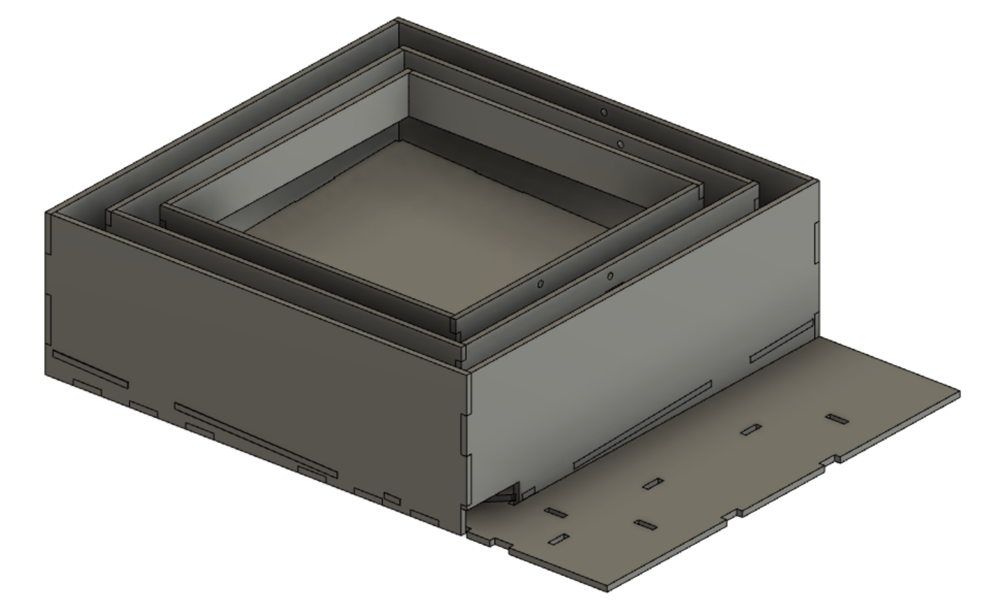

Hands-free remote balance maze
Hands-free remote balance maze
group course project
This project aims to create a two-axis balance maze that can be played remotely via hands-free interaction.
- Nov - Dec 2020
- https://youtu.be/gO9iAuwr6mk
- CAD design file
- download arduino code
Narrative Description
Our project, the hands-free balance maze, is a mechanical marble maze that allows different remote control methods: via handsfree sensors or even a mobile app. The purpose of the project is to provide entertainment, propose a new method for interaction & control (with each hand or your phone's tilt controlling an axis of movement), and to allow remote control of the device via the MQTT server. The game board can be installed anywhere as long as it’s laying on a flat surface; like a desk or floor.
The maze lies flat with the marble at the start position when no player is present. A player can start the game by simply placing his or her hands over the sensors. The proximity between each hand and each sensor determines the degree of tilting along the axis. The player then needs to get the marble ball to the endpoint while avoiding holes on the board that the ball can fall into. When the ball successfully reaches the end there might be a light or music component signaling the success. Whoever the audience is, they will enjoy the tricky challenge and remember the celebration at the end.
The project will be successful if the device can provide an entertaining experience for the user and that the user feels comfortable controlling the board remotely using the sensors or through a phone. User interaction is key.
Technical Outline

We are planning to make the game board using three layers of plywood boxes connected together using shoulder screws & ball bearings; very much like a Gimbal frame. Two hobby servos will be placed in between every two layers to enable rotation/tilting of the first and second inner boxes. These two servos are connected to two sonar rangers that convert input from different hands into tilting movement along the two axes. The innermost box will contain an empty bottom compartment, which will serve as the marble drop. Anytime the player's marble drops through a hole on the maze surface, they will be able to tilt the board to one side and retrieve it easily.
The maze frame can be made lightweight by using press-fit 6mm laser cut plywood parts, which will enable relatively easy movement of the boxes by the two rotating servos. Shoulder screws and ball bearings will allow the boxes to rotate on their axes. Finally, two sonar rangers will be used as input sensors prompting servo movement, while a phototransistor can be used to sense when a marble reaches the maze finish.
CAD design
The complete CAD design can be accessed at https://a360.co/3paEn0S
Bill of Materials
| Name | Qauntity | Parts Expected to be Used | Design and Fabrication Methods |
|---|---|---|---|
| base ground | 1 | plywood | CAD design and laser cutting |
| wires and power source | 1 | 5V battery, breadboard, resistors, UNO R3 controller board, screws, wires, plywood | CAD design and laser cutting |
| sensor station | 1 | one ultrasonic sensor, breadboards, wires | CAD design and laser cutting |
| marble receiver | 1 | plywood | CAD design and laser cutting |
| marble sensor | 1 | optical proximity sensor, breadboard, plywood | CAD design and laser cutting |
| rotation unit | 2 | hobby servos, popsicle sticks, paper clips, shoulder screws, bush bearings, unthreaded spacers, hex nuts, wires | Drill parts and assemble |
| shield box | 3 | plywood | CAD design and laser cutting |
| game board | 1 | plywood | CAD design and laser cutting |
| tilted marble board | 1 | plywood | CAD design and laser cutting |
Prototype development
In the first phase of prototype development we mainly assembled the laser cut boards and hooby servos. We made sure that the connecting parts (connected by shoulder screws and bush bearings) between different layers are light-weight enough so that the rotation of the frame can be supported by hobby servos. In this demo we used two range sensors, with each directly sensing distance to one hand then parse the data to control the servo. During this phase the maze requires two hands to control.
Then we mounted the maze board onto the frame and assembled a small ball receiveing box. We explored the possibility of using only one hand (one waterbottle in this demo) to control the board, hoping that such correspondence would be more intuitive for the player. We succesfully constructed a taped play area in which diagonally placed range sensors can receive accurate x and y data of the hand's position. We applied filters and tested transmitting the data across mqtt brige so we can achieve remote playing. We did succesfully play the game remotely across half the earth. However we also noticed that there is a significant lag between movement of the waterbottle and corresponding changes in the data received. The lag results in a great challenge in providing a smooth playing experience for the player.